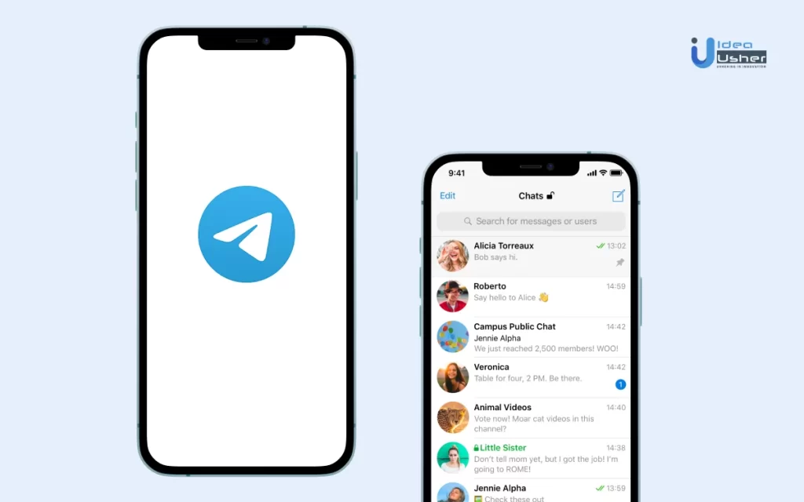

Telegram 撤回消息对方知道吗？
在Telegram中撤回消息后，对方会看到一条“消息已删除”的通知，所以对方会知道消息被撤回了。但是，他们无法看到被撤回消息的具体内容。

Telegram消息撤回功能详解
撤回消息的基本操作步骤
- 选择消息：首先，打开Telegram下载好的应用，并找到你想要撤回的消息。可以是你发送的文本、图片、视频或任何其他类型的消息。
- 撤回操作：长按你想要撤回的消息，然后在弹出的菜单中选择“撤回”或“删除”。Telegram允许用户撤回任何时间点发送的消息，无时间限制。
- 确认撤回：选择撤回后，系统会询问是否仅从自己设备中删除还是同时从对方设备中删除。选择“对所有人撤回”以确保消息从双方的聊天记录中被完全删除。
撤回消息后的系统通知表现
- 消息状态更新：一旦消息被撤回，原消息内容会被替换为“这条消息已被删除”的提示。这保证了即便是在多设备间，撤回的消息也会同步更新状态。
- 通知对方：对方用户会在他们的聊天窗口中看到撤回通知，但不会收到具体撤回了哪条消息的详细信息。这个通知是自动的，用以提醒对方聊天内容有变更。
- 无痕迹撤回：尽管撤回操作会留下“消息已删除”的痕迹，但是对方无法得知原消息的具体内容。这种设计是为了在尊重隐私的同时，保持聊天双方的信息同步。
Telegram中的隐私设置探讨
如何配置消息的自动销毁
- 设置秘密聊天：在Telegram中，自动销毁消息的功能只能在秘密聊天中使用。首先，需要创建一个新的秘密聊天，这可以通过选择联系人后选择“新建秘密聊天”的选项来完成。
- 配置销毁计时器：在秘密聊天窗口，点击聊天设置，然后选择“设置自毁计时器”。这里可以选择消息在被查看几秒后自动删除，时间选项从几秒到一周不等。
- 启动计时器：配置好自毁时间后，发送的所有消息都将按照设定的时间自动从双方设备中删除。这个设置对所有新消息有效，直到计时器被重新设置或取消。
个人隐私与群聊隐私设置方法
- 调整电话号码可见性：在设置菜单的“隐私和安全”部分，可以配置谁可以看到你的电话号码。选项通常包括“所有人”、“我的联系人”或“无人”。这样可以控制个人信息的暴露程度。
- 管理群聊邀请：同样在“隐私和安全”设置中，可以选择谁有权限将你添加到群聊中。可选择的权限包括所有人、联系人或者阻止所有群聊邀请。
- 设置最后在线时间：用户可以选择隐藏他们的最后在线时间。设置选项允许从“所有人”看到到“无人”看到，或是仅限联系人。此外，还可以设置特定用户例外，允许他们看到你的在线状态或隐藏之。

高级消息管理技巧
如何有效使用消息编辑功能
- 编辑已发送消息：在Telegram中，如果你发送了错误的消息或者需要补充信息，可以简单地通过长按该消息并选择“编辑”来修改它。这样可以修正错误而不需要删除并重新发送消息，保持聊天的流畅性。
- 添加格式化：在编辑消息时，可以利用Markdown或HTML标签来添加文本格式化，如粗体、斜体、下划线或超链接。这有助于突出重要内容或改善消息的可读性。
- 及时更新：在发送消息后的48小时内，Telegram允许用户无限次编辑消息内容。利用这一功能，可以确保信息的及时更新和准确性，尤其是在快速变化的讨论或协作环境中。
利用消息标记和搜索增强沟通效率
- 使用标签管理消息：为重要消息添加标签（如通过星标），这样你可以快速通过“已加星标消息”来查找这些关键信息。这对于管理项目更新、重要日期或关键决策非常有用。
- 高级搜索技巧：Telegram的搜索功能不仅可以按聊天搜索消息，还可以通过日期、发送者和包含的媒体类型来过滤结果。使用这些高级搜索选项可以快速定位历史对话中的特定信息。
- 整理聊天列表：通过固定重要的聊天到顶部或为聊天设置别名，你可以更有效地管理聊天列表。这样做可以确保重要对话总是容易访问，而不会在大量的聊天信息中迷失。

消息撤回的限制与可能性
撤回消息的时间限制
- 无时间限制：Telegram区别于其他许多即时消息应用，它允许用户在任何时候撤回已发送的消息，无论这些消息是发送几分钟、几小时还是几天前的。
- 群聊中的特殊考虑：尽管个人聊天中撤回消息没有时间限制，但在群聊中，管理员可以设置是否允许成员撤回自己的消息，这可能包括对时间的限制。
- 对方看到的情况：即使消息被成功撤回，对方用户仍然可能已经看到或接收到了通知，尤其是在对方处于在线状态并且正在聊天窗口中时。
在不同设备上撤回消息的影响
- 多设备同步：当你从一个设备撤回消息时，该操作会自动同步到所有其他设备。无论是手机、平板还是桌面版，撤回的消息都会在所有登录账户的设备上显示为“消息已被删除”。
- 网络连接的影响：如果在撤回操作时，某些设备未连接到网络，这些设备上的消息将在下次联网时更新撤回状态。这可能导致撤回操作在所有设备上生效上有所延迟。
- 消息状态的一致性：Telegram确保在所有设备上撤回的消息状态保持一致，避免了信息的不一致导致的混淆或误解，提升了使用体验的整体连贯性。
探索Telegram的用户体验
用户对消息撤回功能的反馈
- 积极评价的方面：许多用户表示，消息撤回功能提供了额外的安全感，使他们能够更自由地发送消息，知道可以在任何时候撤回不当或错误的信息。这种灵活性被视为一个显著的优势。
- 负面反馈与改进请求：尽管消息撤回功能受到欢迎，但部分用户表示希望撤回操作不会留下“消息已删除”的提示，以便更加隐私和无痕。此外，有用户希望增加批量撤回功能，以提高效率。
- 使用场景的多样性：用户反馈中常见的是，在商务沟通或处理敏感信息时，消息撤回功能尤其受到青睐。此外，错发消息的快速纠正减少了潜在的误会和冲突。
消息撤回功能与用户满意度的关系
- 提高用户信任：能够撤回消息让用户对Telegram的隐私控制功能感到满意，这增强了他们对平台的信任。用户认为这是一种保护个人隐私和数据的有效工具。
- 增强用户留存：由于这一功能的存在，用户更倾向于选择Telegram作为日常通讯工具。能够撤回消息减少了发送错误信息后的后顾之忧，从而提高了用户的整体满意度和留存率。
- 对新用户的吸引：消息撤回功能作为Telegram的一个亮点，常被现有用户向潜在新用户推荐。这种功能的存在使得Telegram在众多即时通讯应用中脱颖而出，吸引了更多注重隐私保护的用户。
撤回Telegram消息后对方收到通知吗？
当你在Telegram中撤回一条消息时，对方的聊天窗口中会显示“消息已删除”的提示，所以对方会知道有消息被撤回，但不会知道具体内容。
Telegram中撤回消息后，会留下什么痕迹？
撤回消息后，原来的消息内容会被替换为“这条消息已被删除”。对方可以看到这个提示，但无法看到原始消息的任何内容。
是否可以在Telegram中撤回任何时间点的消息？
是的，Telegram允许用户在任何时间点撤回他们发送的消息，不论这些消息是刚发送的还是已经发送多日的，都可以被撤回。
Telegram中文 其他新闻
Telegram有PC客户端吗？
有，Telegram提供官方PC客户端，支持Windows、macOS和Linux系统。用户可通过桌面客户端发 […]
2025 年 08 月 23 日

TG如何搜寻群组？
在Telegram搜索群组，可以在应用内顶部的搜索栏输入群组名称或相关关键词，系统会显示匹配的公共群组。选择合 […]
2025 年 04 月 15 日
TG怎么用短信登录？
要使用短信登录Telegram（TG），首先打开Telegram应用或网站并选择登录。输入你的手机号码并选择对 […]
2024 年 04 月 13 日
为什么Telegram被限制？
Telegram在一些国家被限制或封锁，通常是因为其加密技术和隐私保护功能，使得政府难以监控用户通信。部分国家 […]
2025 年 01 月 19 日